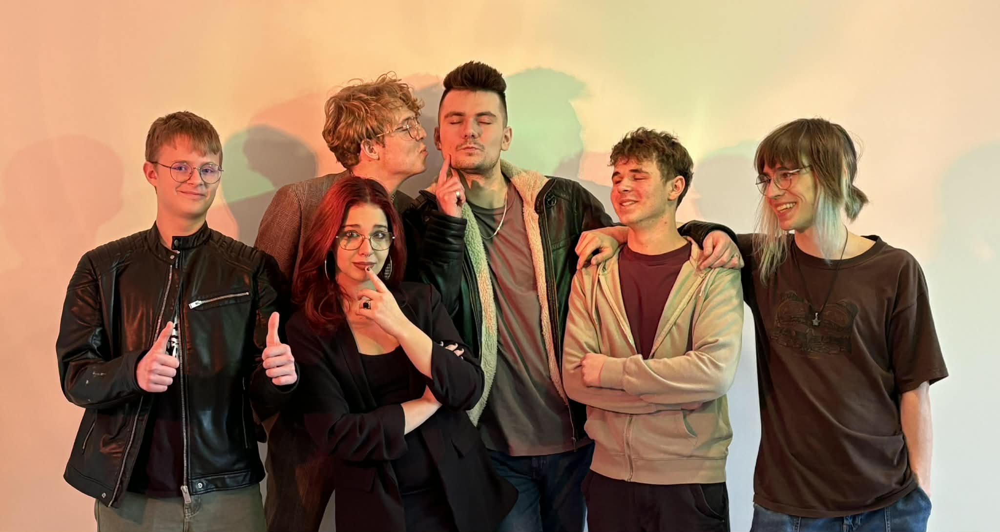
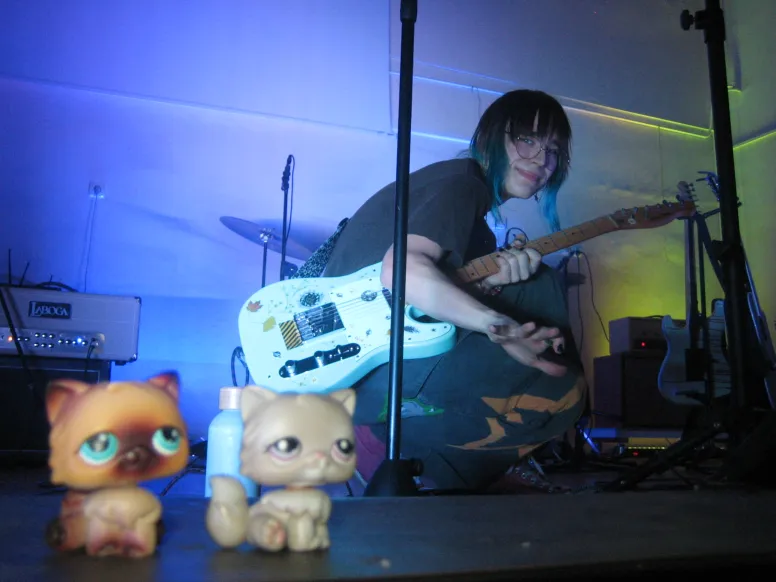
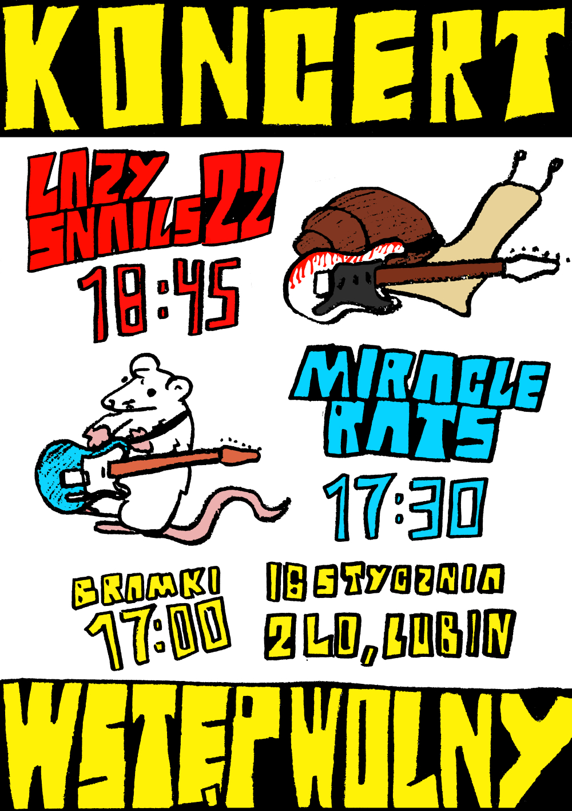
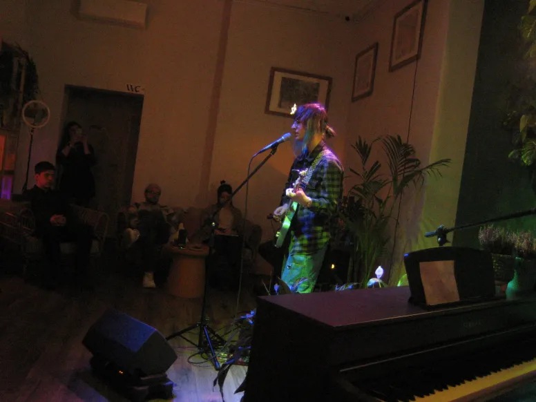
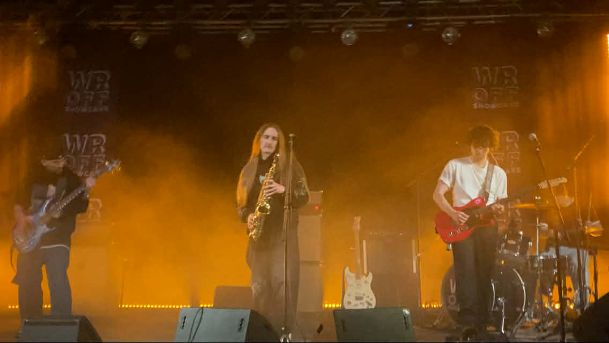
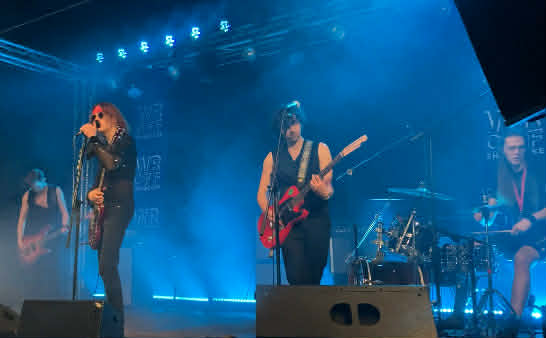
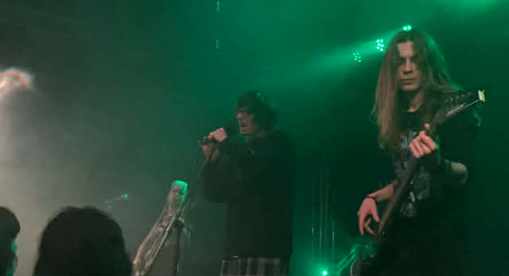
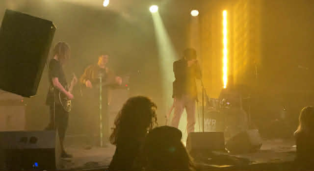

I disappeared again! But I'm back! And I have some awesome news for you.
First and foremost I was in studi in Sucha Górna for two weeks.
It was really cool expierienc, cos I'd wake up everyday around 6 or 7 am to get to the studio at 9 o'clock and I'd leave at 3pm (kinda like going to work, but nobody paid me to do that lol).
First week I was all alone at the studio with a plan to record drums and guitars (because they have awesome mic for guitars - Royer R121),
but in the end I only got down guitars for one song (and you can listen to that in the Music tab btw).
Tracking drums was my priority. Second week I went with a whole band, not Miracle Rats but Lazy Snails 22.

This time we got drums done in about two days. Next we tracked guitars and we were about to lay down bass, but there was problem. Bass guitar was acting like an antenna, recieving some weird signals that sounded like R2-D2 singing behind a wall. My friend Kuba (drummer in Destiny and Innocent Spell and also keeper of this very studio) warrned me about it, but after tracking guitars without any issues I thought bass would be a piece of cake. In the end we tracked bass over at my house with a borrowed kick (V Kick from SEelectronics). Last were acoustic guitar and vocals, which we got down surprisingly fast. And now I'm mixing this album in between my college classes. Hopefully I'll finnish before the deadline, because Kajetan wants to release it very soon.
And they were first two ever Miracle Rats gigs! Well I played them by myself with looper and backing tracks but you gotta start somewhere right. Thanks to everyone who came and even bigger thanks to Gwen and Kamil, I really wasn't expecting you at that first gig.



For two years I've been wanting to play on WROFF Showcase Z with my bands, but none of them had required amount of music for a live set. But this year a lot of bands I know played so I decided to come. I met a ton of new people, saw Generacja Destrukcji live for the first time, hang around backstage and somehow ended up in Gabryś's interview in Radio Wnet. I need to come to gigs more often.




And that's all for today. I encourage you to give all those amazing bands a listen and see you in the next one (I swear I'll be blogging regularly T-T)
Febuary 25th 2026
I disappeared again! But I'm back! And I have some awesome news for you.
First and foremost I was in studi in Sucha Górna for two weeks.
It was really cool expierienc, cos I'd wake up everyday around 6 or 7 am to get to the studio at 9 o'clock and I'd leave at 3pm (kinda like going to work, but nobody paid me to do that lol).
First week I was all alone at the studio with a plan to record drums and guitars (because they have awesome mic for guitars - Royer R121),
but in the end I only got down guitars for one song (and you can listen to that in the Music tab btw).
Tracking drums was my priority. Second week I went with a whole band, not Miracle Rats but Lazy Snails 22.
This time we got drums done in about two days. Next we tracked guitars and we were about to lay down bass, but there was problem. Bass guitar was acting like an antenna, recieving some weird signals that sounded like R2-D2 singing behind a wall. My friend Kuba (drummer in Destiny and Innocent Spell and also keeper of this very studio) warrned me about it, but after tracking guitars without any issues I thought bass would be a piece of cake. In the end we tracked bass over at my house with a borrowed kick (V Kick from SEelectronics). Last were acoustic guitar and vocals, which we got down surprisingly fast. And now I'm mixing this album in between my college classes. Hopefully I'll finnish before the deadline, because Kajetan wants to release it very soon.
And they were first two ever Miracle Rats gigs! Well I played them by myself with looper and backing tracks but you gotta start somewhere right. Thanks to everyone who came and even bigger thanks to Gwen and Kamil, I really wasn't expecting you at that first gig.
Photo: Gwen
For two years I've been wanting to play on WROFF Showcase Z with my bands, but none of them had required amount of music for a live set. But this year a lot of bands I know played so I decided to come. I met a ton of new people, saw Generacja Destrukcji live for the first time, hang around backstage and somehow ended up in Gabryś's interview in Radio Wnet. I need to come to gigs more often.
From left to right: MSV, Destiny,
Generacja Destrukcji i Street Cat.
Arche
got no photos cos I was on the radio a the time.
And that's all for today. I encourage you to give all those amazing bands a listen and see you in the next one (I swear I'll be blogging regularly T-T)
Febuary 25th 2026